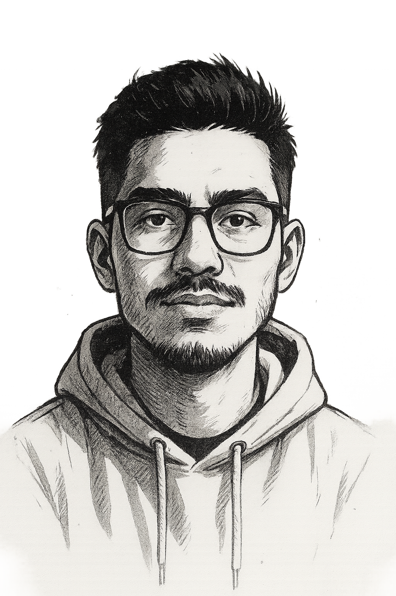

""<!-- index.html (ajuste completo de posicionamiento "de Software" fuera de la imagen + responsive) -->
<!DOCTYPE html>
<html lang="es">
<head>
  <meta charset="UTF-8" />
  <meta name="viewport" content="width=device-width, initial-scale=1.0" />
  <title>Inicio - Hesler Zacarias</title>
  <script src="https://cdn.tailwindcss.com"></script>
  <script>
    tailwind.config = {
      darkMode: 'class',
      theme: {
        extend: {
          fontFamily: {
            display: ['"Poppins"', 'sans-serif'],
          },
          colors: {
            primary: '#06b6d4',
          },
        },
      },
    };
  </script>
  <link href="https://fonts.googleapis.com/css2?family=Poppins:wght@400;600;700&display=swap" rel="stylesheet">
  <style>
    .gradient-blur {
      background: linear-gradient(to right, #000000 0%, #1a1a1a 45%, #f4f4f4 55%, #ffffff 100%);
    }
  </style>
</head>
<body class="font-display bg-black text-gray-100">
  <!-- Encabezado fijo -->
  <header class="bg-black/90 backdrop-blur-md p-4 sticky top-0 z-50 border-b border-gray-800">
    <nav class="flex justify-between items-center max-w-7xl mx-auto">
      <a href="index.html" class="text-white text-3xl font-extrabold tracking-wide">
        <span class="bg-gradient-to-r from-cyan-400 to-blue-600 text-transparent bg-clip-text">HZ</span>
      </a>
      <ul class="flex gap-6 text-sm font-medium">
        <li><a href="index.html" class="text-white hover:text-cyan-400 transition">Inicio</a></li>
        <li><a href="sobre-mi.html" class="text-white hover:text-cyan-400 transition">Sobre Mí</a></li>
        <li><a href="portafolio.html" class="text-white hover:text-cyan-400 transition">Portafolio</a></li>
      </ul>
    </nav>
  </header>

  <!-- Cuerpo dividido con imagen superpuesta -->
  <main class="relative min-h-screen gradient-blur">
    <div class="grid grid-cols-1 md:grid-cols-2 h-full">
      <!-- Lado izquierdo (Desarrollador) -->
      <div class="flex flex-col justify-center items-center text-white p-6 relative z-10">
        <h2 class="text-3xl sm:text-4xl md:text-5xl font-extrabold text-white/90 text-center">Desarrollador</h2>
      </div>

      <!-- Lado derecho (de Software) -->
      <div class="flex flex-col justify-center items-center text-gray-900 p-6 relative z-10">
        <h2 class="text-3xl sm:text-4xl md:text-5xl font-extrabold text-gray-800 drop-shadow text-center">de Software</h2>
      </div>
    </div>

    <!-- Imagen central (superpuesta sobre ambos lados) -->
    <div class="absolute inset-0 flex justify-center items-center z-0 pointer-events-none">
      
    </div>

    <!-- Frase y CTA -->
    <div class="absolute bottom-10 sm:bottom-14 left-1/2 -translate-x-1/2 text-center z-20 px-6">
      <p class="text-base sm:text-lg md:text-2xl font-semibold max-w-4xl mx-auto leading-relaxed">
        <span class="text-cyan-400 font-bold">Transformo ideas</span>
        <span class="text-black"> en sistemas eficientes,</span>
        <span class="text-cyan-300"> seguros</span>
        <span class="text-black"> y listos para</span>
        <span class="text-cyan-500"> escalar</span>.
      </p>
      <a href="portafolio.html" class="mt-6 inline-block bg-cyan-600 text-white px-6 py-3 rounded-full hover:bg-cyan-700 hover:scale-105 transition-all duration-300 shadow-xl text-sm sm:text-base">
        Ver mis proyectos
      </a>
    </div>
  </main>

  <!-- Pie de página -->
  <footer class="bg-black text-center p-6 border-t border-gray-800">
    <p class="text-gray-500 text-sm">© 2025 Hesler Zacarias • Desarrollador de Software</p>
  </footer>
</body>
</html>